90
CAPÍTULO 2 - Cálculo do volume de sólidos geométricos
Lúcia comprou um aquário com 100 cm de comprimento, 40 cm de largura e 50 cm de altura. Qual é a capacidade, em litros, desse aquário?
Troque ideias com um colega e representem, no caderno, um desenho com as medidas do aquário e expliquem como podemos calcular a capacidade do aquário. Em seguida, calculem a capacidade do aquário.
Na situação apresentada foi possível relembrar como calcular a capacidade e o volume de um sólido geométrico. Vejamos agora outra situação em que necessitamos calcular o volume.
91
Na cidade costeira de Llanes, localizada na província de Astúrias, na Espanha, há uma escultura chamada Os cubos da memória, do pintor e escultor espanhol Agustin Ibarrola. Essa escultura é composta de grandes blocos de concreto, que apresentam variadas composições de cores.
Supondo que a medida da aresta de um dos cubos seja igual a y + 1, que polinômio indica o volume desse cubo?
Vamos representar o cubo e as suas medidas por meio de um desenho.
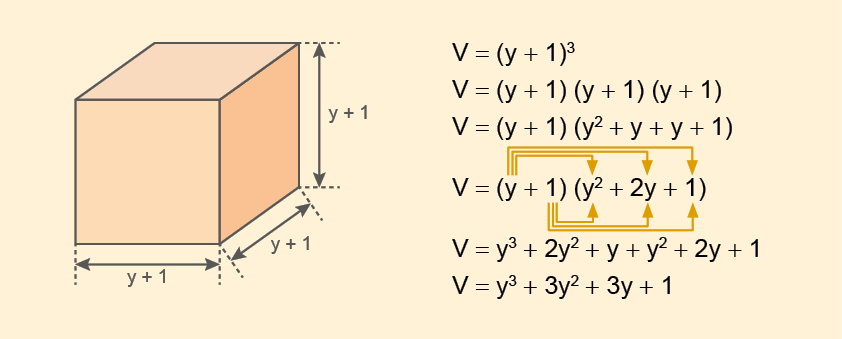
O polinômio que indica o volume do cubo é y3 + 3y2 + 3y + 1.
Empilham-se os cubos A para formar um cubo maior, B. Duas pessoas querem calcular o volume de B tomando o volume de A como unidade. Uma delas conta somente o número de quadrados que aparecem em cada uma das faces de B.
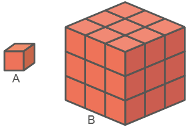
A pessoa que contou o número de quadrados de cada face calculou corretamente? Por quê?
Utilizando o cubo A como unidade-padrão, qual é o volume do cubo B?
Para formar o paralelepípedo B, é necessário empilhar quantos cubos A?
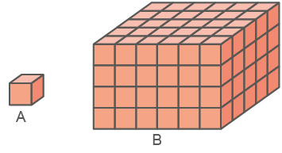
92
Adicionando as áreas de cada face de um sólido geométrico, obtemos a área total desse sólido. Um cubo cuja aresta mede x tem sua área total igual a 384 cm2. Calcule, em cm3, o volume desse cubo.
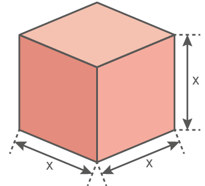
Usando uma folha de latão, João construiu um cubo com volume igual a a3. Que polinômio indica a área mínima da folha utilizada por João?
Um reservatório de 1,2 m de comprimento, 85 cm de largura e 70 cm de profundidade (medidas internas) estava com um terço de sua capacidade com água pura, quando foram retirados 79 litros. Quantos litros de água sobraram no reservatório? Lembre-se: 1 dm3 = 1 litro.
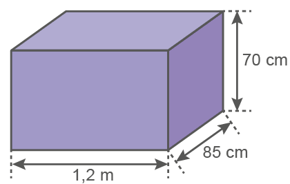
As dimensões de um paralelepípedo retângulo são x, 3 e 5. A área total das faces do paralelepípedo é 94 u.a. Calcule seu volume.
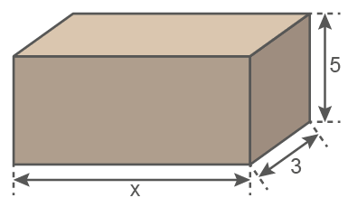
Escreva o polinômio que indica o volume de cada sólido geométrico.
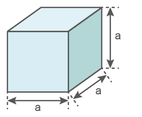
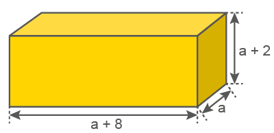
De um paralelepípedo retangular com dimensões x, 4x e 8x, são removidos dois cubos de aresta x, como mostra a figura a seguir. Qual é o volume do sólido resultante?
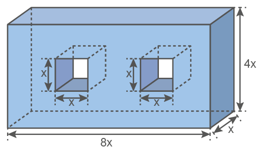
93
Escreva em seu caderno o polinômio, na forma reduzida, que representa o volume do sólido apresentado a seguir.
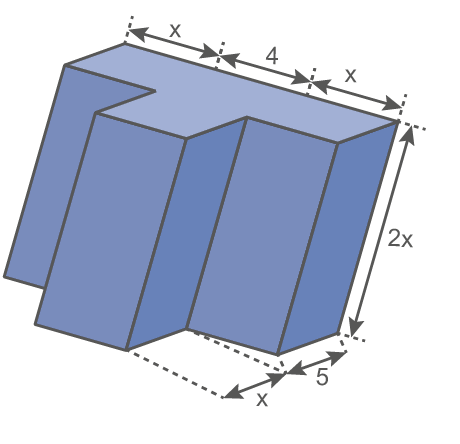
O sólido geométrico a seguir é composto por cubos de mesmo tamanho, com arestas medindo 2x - 1. Determine o polinômio, na forma reduzida, que representa o volume desse sólido.
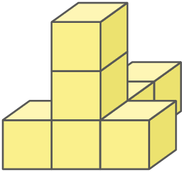
A escultura a seguir é formada por 9 cubos. A medida da aresta do cubo amarelo é o triplo da medida da aresta do cubo verde, ao passo que a aresta do cubo azul tem a metade da medida da aresta do cubo verde. Usando x para representar a medida da aresta do cubo verde, determine o polinômio, na forma reduzida, que representa o volume total dessa escultura.
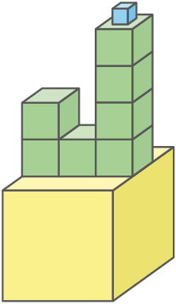
A seguir, temos a representação das dimensões internas de um aquário, em centímetros. Sabendo que o nível de água é 10 cm abaixo da borda, que polinômio representa o volume total de água desse aquário?
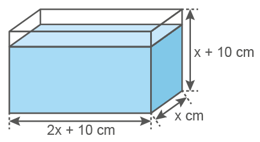
Em duplas, criem uma situação-problema com a figura abaixo e os dados a seguir.
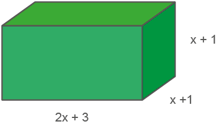
Estabeleça qual deve ser o valor de x para se chegar a uma solução. Em seguida, troquem os cadernos com outra dupla, para que eles resolvam a situação elaborada por vocês.
Aquário, Polônia, 2019.
MichalPL/wikimedia.commons
Encontre soluções
IBARROLA, Agustin. Os cubos da memória. Llanes, província de Astúrias, Espanha, 2017.
![Figura de uma cartolina na cor cinza e no molde de uma caixa de 1 litro de leite. A figura mostra as divisões geométricas no interior dela. São cinco quadrados: Um no centro e os outros quatro em cima, embaixo, à esquerda e à direita do quadrado central. Do lado esquerdo e direito dos quadrados de cima e debaixo saem duas abas no formato de um trapézio com a base virada para o quadrado. Uma linha à direita da figura mostra três vezes a medida de 10 cm cada quadrado. Abaixo da figura, uma outra linha com a medida do quadrado debaixo e 1,5cm a lateral do trapézio. Mais à direita a fotografia de uma caixa de 1 um litro de leite vazia.](../../resources/images/8ANO_U4_image/M8A_8_ano_mat_P_85_cubos_da_mem_ria.png)
Borja/Flickr
As variáveis são importantes para definir como devemos proceder em cada etapa de uma pesquisa. De modo geral, as variáveis estatísticas são classificadas em duas formas: qualitativas e quantitativas.
As variáveis qualitativas, são dados que não podem ser expressos com base em números e sim em uma qualidade do objeto estudado, podem ser nominais ou ordinais. Já as variáveis quantitativas, são aquelas que concentram a representação numérica de algo pesquisado e podem ser discretas ou contínuas:
96
A seguir, temos os dados de uma pesquisa realizada sobre a diferença de salários por escolaridade entre homens e mulheres.
97
Considerando os dados dessa pesquisa, responda em seu caderno:
Você acredita que a pesquisa é censitária ou amostral?
Quais perguntas você faria aos entrevistados para essa pesquisa? Converse com um colega e, juntos, elaborem um modelo de questionário.
Quais são os tipos de variáveis presentes na pesquisa?
Quais conclusões, a respeito da relação da escolaridade e do salário, podemos ter com base nas informações apresentadas no gráfico?
94
Já vimos nos anos anteriores que a unidade-padrão usada para medir volumes é o metro cúbico (m³) e, para medir capacidades, o litro (L). Mas qual relação podemos estabelecer entre essas medidas? Vamos rever com o experimento a seguir.
Em dupla, vejam a relação de materiais necessários. Depois, mãos à obra!
Materiais:
1 caixa de leite de 1 litro vazia
Régua graduada
Tesoura sem ponta
1 cartolina
Areia suficiente para encher a caixa de leite
Cola
Procedimentos:
Façam o desenho na cartolina do molde de uma caixa, conforme o modelo, respeitando as medidas indicadas.
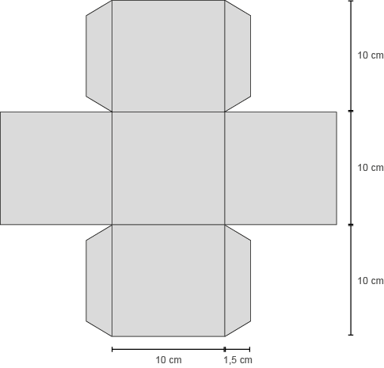
Recortem o molde e montem a caixa.
Em seguida, recortem a parte superior da caixa de leite, conforme mostra a imagem, e coloquem a areia nessa caixa, até enchê-la.
95
Agora, no caderno, respondam:
Quais medidas vocês utilizaram, em cm, para construir os lados dos quadrados?
Quanto representa essa medida, em dm?
Qual é o volume, em dm3, da caixa que vocês construíram?
Qual é a capacidade da caixa de leite que vocês trouxeram?
Transfira a areia da caixa de leite para a caixa construída. Comparando a capacidade da caixa de leite com o volume da caixa que você montou, qual relação podemos estabelecer entre essas unidades de medida?
Por meio desse experimento, é possível verificar que: 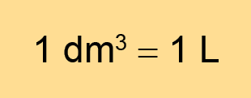
S.I/Acervo da Editora
Sérgio Bonfim dos Santos
Encontre soluções
Probabilidade e estatística
Variáveis em pesquisas
Se 1 dm³ = 1 L, então, quantos litros correspondem a 1 m³?
Um aquário tem 40 cm de comprimento, 30 cm de largura e 30 cm de altura. Quantos litros de água cabem nesse aquário?
Uma caixa tem o formato e as dimensões internas indicados na figura ao lado.
Se despejarmos 28 litros de água nessa caixa, a água transbordará?
Elabore, em seu caderno, um problema em que seja necessário o cálculo de capacidade de um cubo de lado medindo 20 cm. Troque o caderno com um colega para que um resolva o problema do outro e, juntos, avaliem se a resolução está correta.
30 cm
20 cm
40 cm
Nominal
Profissão
Sexo
Religião
Qualitativa
![Gráfico de barras horizontais com o título “Diferença de salários por escolaridade” Abaixo do título: Pesquisa leva em conta a média salarial em reais. Mais abaixo, Homens sublinhado de azul com o avatar de um homem. À direita, Mulheres sublinhada em vermelho e o avatar de uma mulher. O gráfico compara seis níveis de escolaridade. Ao lado de cada nível a média salarial de homens e mulheres calculado ao lado a porcentagem a menos, na cor vermelha. De cima para baixo: MBA, homens: 10.106,18; mulheres: 5.811,80. A menos 42,49%. Pós-graduação/Especialização, homens: 7.339,94; mulheres: 4.768,06. A menos 35,04%. Formação Superior, homens: 4.485,82; mulheres: 2.533,16. A menos 43,53%. Ensino Médio, homens: 2.420,52. Mulheres: 1.418,63. A menos 41,39%. Ensino Fundamental, homens: 2.359,98; mulheres: 1.397,89. A menos 40,77%. Fundamental incompleto, homens: 1.861,25; mulheres: 1.466,36. Menos 21,22%. Fonte: Catho.](../../resources/images/8ANO_U4_image/M8A_8_ano_mat_P_103_infografico_diferen_a_de_salarios.png)
Fonte: G1. Disponível em: https://cutt.ly/LJVkdNM. Acesso em: 10 jun. 2022.
Ordinal
Escolaridade
Estágio de uma doença
Classe social
Discreta
N.º de filhos
N.º de aparelhos comprados
Quantitativa
Contínua
Altura
Massa
Salário
Karina Almeida/G1
relembrE
Os vértices do losango coincidem com os pontos médios dos lados do retângulo ABCD, de área igual a 60 cm2. Qual é a área da região verde?
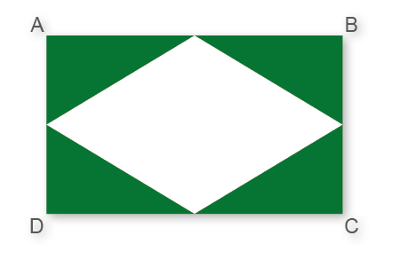
(Saresp) Um quadrado tem lado de medida 6 cm. Diminuindo 3 cm de cada um dos lados, é correto afirmar:
O perímetro do novo quadrado tem 12 cm a mais que o perímetro do primeiro.
O perímetro do novo quadrado é a terça parte do perímetro do primeiro.
A área do novo quadrado é a quarta parte da área do primeiro.
A área do novo quadrado tem 9 m2 a mais do que a área do primeiro.
(Saresp) A figura seguinte é composta de uma malha, em que os lados dos quadradinhos medem
1 cm e na qual estão destacadas algumas regiões, numeradas de I a V.
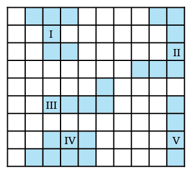
As regiões que têm perímetros iguais são as de números:
III e IV.
II e III.
II e IV.
I e II.
(UECE) Na figura, o retângulo ABCD foi dividido em 4 partes.
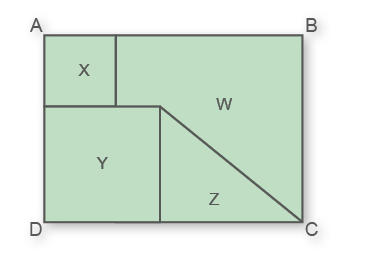
98
Se X e Y são quadrados de áreas
81 m2 e 144 m2, respectivamente, e Z é um triângulo com 102 m2 de área, então a área da região W é:
327 m2
316 m2
309 m2
282 m2
(CEFET-SP) A densidade demográfica de um país é calculada pela razão entre o número de habitantes e a área do país. Um país cujo mapa é o polígono abaixo tem densidade demográfica igual a 18,9 hab./km2. Qual a população desse país?
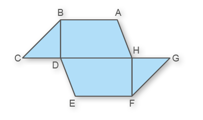
BA = EF = 100 km
CH = DG = 200 km
BD = FH = 50 km
BA // CG // EF
250 000 habitantes
265 400 habitantes
283 500 habitantes
330 750 habitantes
340 450 habitantes
Observe a figura e verifique o que representam as expressões 2,1x + x2; 4x + 4,2 e x(2,1 + x), respectivamente.
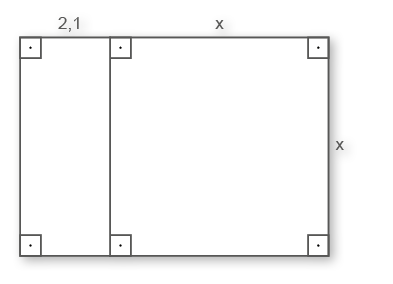
Perímetro, área e perímetro.
Área, perímetro e área.
Perímetro, área e área.
Perímetro, perímetro e área.
Área, área e área.
Uma fábrica de caixas de papelão necessita fabricar 1 000 caixas com dimensões iguais às da figura a seguir.
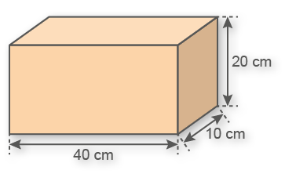
O consumo de papelão, em m2, para fabricar as caixas será de, aproximadamente:
280 m2
28 m2
2 800 m2
120 m2
99
A capacidade máxima de uma caixa-d’água que tem a forma de um paralelepípedo retângulo de dimensões 2 m, 2 m e 1 m é:
40 litros
400 litros
4 000 litros
40 000 litros
(UNESP-SP) Considere um pedaço de cartolina retangular de lado menor 10 cm e lado maior 20 cm. Retirando-se 4 quadrados iguais de lados x cm (um quadrado de cada canto) e dobrando-se na linha pontilhada conforme mostra a figura, obtém-se uma pequena caixa retangular sem tampa.
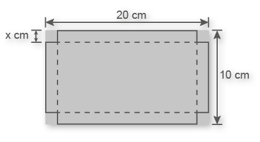
O polinômio na variável x, que representa o volume, em cm3, desta caixa, é:
4x3 - 60x2 + 200x
4x2 - 60x + 200
4x3 - 60x2 + 200
x3 - 30x2 + 200x
x3 - 15x2 + 50x
(CEFET-SP) Uma caixa de leite achocolatado tem 6 faces retangulares e as dimensões 4 cm × 6 cm × 8 cm. Quantos mililitros de leite podem ser acondicionados nessa caixa se 10% do seu volume deverá ser preenchido com ar?
152 mL
162,5 mL
162,7 mL
172,8 mL
192 mL
(UEMS) A figura representa dois cubos. O menor de arestas a e o maior de arestas ka. Se o cubo maior tem área total de 162 cm2 e a razão entre a área do menor e a do maior é de , pode-se afirmar que o volume do cubo menor é de:
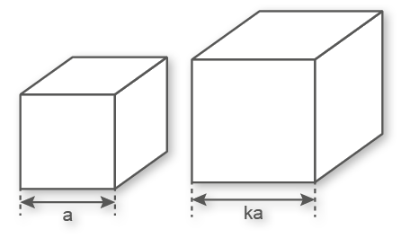
8 cm3
9 cm3
16 cm3
27 cm3
32 cm3
Um paralelepípedo tem as seguintes dimensões: x, x + 1 e x - 2, conforme a figura abaixo.
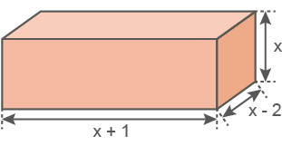
É correto afirmar que o volume desse sólido é igual a:
x2 - 2x
x2 - x - 2
x3 - x2 - 2x
x3 + x2 - 2